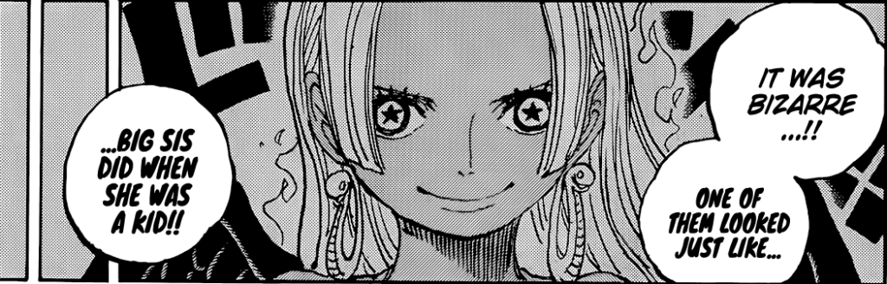

One Piece Theory: Who is the Man Marked by Flames?
In chapter 1056 we saw that Law gave Kid a copy of Kaido’s Road Poneglyph. As Killer examines it he comments that if they want to be real contenders in the race for the One Piece then they’re going to ‘have to get serious about this task’.

One Piece Theory: The Seraphim Project
Just recently, One Piece Chapter 1059 revealed that the SSG are actually genetically enhanced clones with
Lunarian abilities! However, how did Vegapunk accomplish this?
The identification of Lineage Factors and Bloodline Elements formed the foundation of this technology. All of
the various components that make up the Seraphim project are built around this discovery. As soon as Vegapunk
learned about it, he was detained, and MADS was incorporated into the World Government.

One Piece Theory:The Red Line's biggest secret may be revealed via Elbaf myth.
In addition to a theory about Elbafian lore, Elbaf is indeed approaching. The Little Garden arc, when Giants
Dorry and Brogy are introduced as the audience's first encounters with the race, provides significant evidence
in favor of the theory.
Although it is improbable that the Red Line is a gigantic serpent that is dozing, the continent itself is at
least a representation of the Norse World Serpent. Foreshadowing and symbolism are two of author Eiichiro Oda's
favorite literary techniques, and CM Renji's hypothesis contains examples of both.
Explore One Piece Theories
Do you adore One Piece theorizing? If so, kindly visit our One Piece theory area and let us know what you think of the published hypotheses and predictions.
More About One Piece
One Piece tells the tale of Monkey D. Luffy, a young man who consumes Gomu Gomu no Mi and turns into a rubber
man. Luffy aspires to succeed the current pirate king. With the help of his crew and other pals, Luffy sets sail
for the Grand Line in quest of the One Piece treasure.
The Japanese manga series One Piece was created by Eiichiro Oda. The manga's initial serialization was released
by Shueisha in 1997. One Piece currently has 99 volumes available. Several anime movies and a TV anime version
of One Piece were also produced.